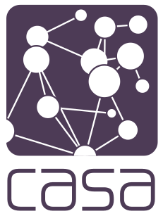

Hypothesis Testing
Establishing and evaluating research hypotheses
Beatrice Taylor - beatrice.taylor@ucl.ac.uk
12th December 2024
Any other information
Key Information
| Module Lead | Contact |
|---|---|
| Prof. Adam Dennett Dr. Huanfa Chen Dr. Beatrice Taylor | a.dennett[at]ucl.ac.uk huanfa.chen[at]ucl.ac.uk. beatrice.taylor[at]ucl.ac.uk |
| PGTAs | |
| , , | Slack |
Last week
Overview of lecture 2
Looked at data analysis.
This week
Hypothesising
Research science is about coming up with hypotheses and evaluating them.
Learning Objectives
By the end of this lecture you should:
- Establish a hypothesis.
- Define the Type I and Type II errors. - Define the Type I and Type II errors.
- Calculate the p-value.
Motivations
How do we know what to believe?
What we see in the news
- Is London less safe for cyclists than ten years ago?
- Are x days above 30 degrees in London indicative of a warming climate?
- Is London’s murder rate higher than New York?
How do you come up with a hypothesis?
What is a hypothesis?
- You have a coin.
- You think it’s a fair coin.
- You toss it 10 times.
- It comes up heads 7 times.
What question can you ask?
- You have a coin.
- You think it’s a fair coin.
- You toss it 10 times.
- It comes up heads 7 times.
- Is it a fair coin? NO!
- What’s the probability that it’s fair? NO!
- If the coin is fair, how likely would it be to see 7 heads out of 10 flips? ALMOST!
What question should you ask?
- You have a coin.
- You think it’s a fair coin.
- You toss it 10 times.
- It comes up heads 7 times.
Correct formulation:
If the coin is fair, how likely would it be to see 7 heads out of 10 flips OR AN EVEN MORE EXTREME RESULT?
Establishing a Hypothesis
Step 1
Define the question
Null hypothesis – the status quo. The alternative hypothesis – need some evidence to verify.
Step 2
Set you significance level
- Decide what “too unlikely” means BEFORE YOU DO THE TEST.
- e.g. 𝜶 = 0.05 (5% significance)
- This means that if we see evidence that would have less than a 5% chance of occurring if the null hypothesis is true, then we reject the null hypothesis.
Step 3
Identify the evidence
- Example: data collection – i.e urine sample for pregnancy test
Step 4
Calculate the p-value
- The p-value is the probability of seeing the evidence, or something even more extreme, if the null hypothesis is true.
Step 5
Compare p-value with hypothesis level
- p-value > 𝜶 - Evidence not that unlikely. Not enough evidence to reject H0.
- p-value ⩽ 𝜶 - Evidence very unlikely. Reject H0 and accept H1.
The steps
- Define the question
- Set you significance level
- Identify the evidence
- Calculate the p-value
- Compare p-value with hypothesis level
Example
Cyclists in London.
Types of error
Type I error
Type II error
Example
Matrix of errors
A good hypothesis or a bad hypothesis?
What makes a hypothesis good?
Understanding the literature and the context
Hypothesis doesn’t come out of thin air
Asking ethical hypothesis questions
- not making unethical assumptions in choosing the hypothesis.
- Example: correlation between ethnicity and crime
- Use contextual knowledge to consider correlation vs causation
Correlation vs. Causation
Lots of things can be correlated - but it doesn’t mean one event caused another.
Aliens and taxes
Example from spurious correlations
Correlation IS NOT causation
You might not know whether events are correlated, or causing each other.
The point of the hypothesis test is to test your idea – but use your contextual understanding to come up with plausible (and ethical) initial questions
The point of the scientific method
The process of coming up with a question, testing, iterating.
Statistical tests
Parametric vs. Non-parametric tests
Parametric Tests
- Evaluate hypothesis for specific parameters
- Typically have assumptions about the distribution - e.g. assumed normal distribution
Non-parametric Tests
- Evaluate hypotheis for entire population distirbution
- Typcially less assumptions on the ditribution
How many tails
Tests can be one-tailed or two-tailed.

Parametric tests
T-test
Assumes the data is normally distributed.
T-test example
What is the probability of someone age 15 being a student on CASA007?
The probability is very small so we reject.
Regression T-tests
Is the gradient non-zero?
This indicates a correlation between the two variables.
…
This will be covered further in lecture X on linear regression.
Mean comparison t-test
Compares the mean of two distributions.
Non-parametric tests
Kolmogorov-Smirnov test
- Compares two probability distributions
- Can be used to test whether an observed sameple came from a given distribution
- Or to test whether two samples both came from the same distribution
Kernel density estimate
- Used to generate a smooth PDF for a random variable dataset.
- Think of it as getting a smooth function to describe a histogram of data.
- There are no assumptions about the prior distribution
Overview
We’ve covered:
- What makes a good hypothesis
- How to formally state a hypothesis
- Types of statistical tests
Practical
Practical will focus on establishing a evaluation a hypothesis.
- Have questions prepared!

© CASA | ucl.ac.uk/bartlett/casa